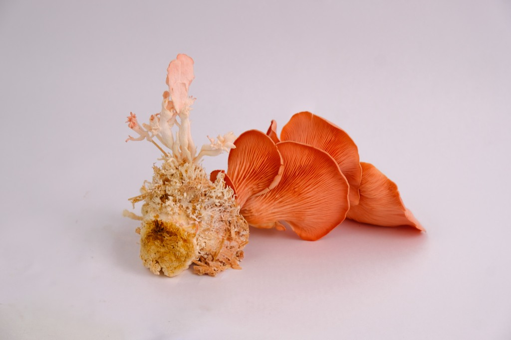
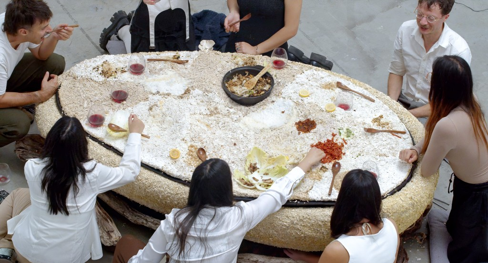
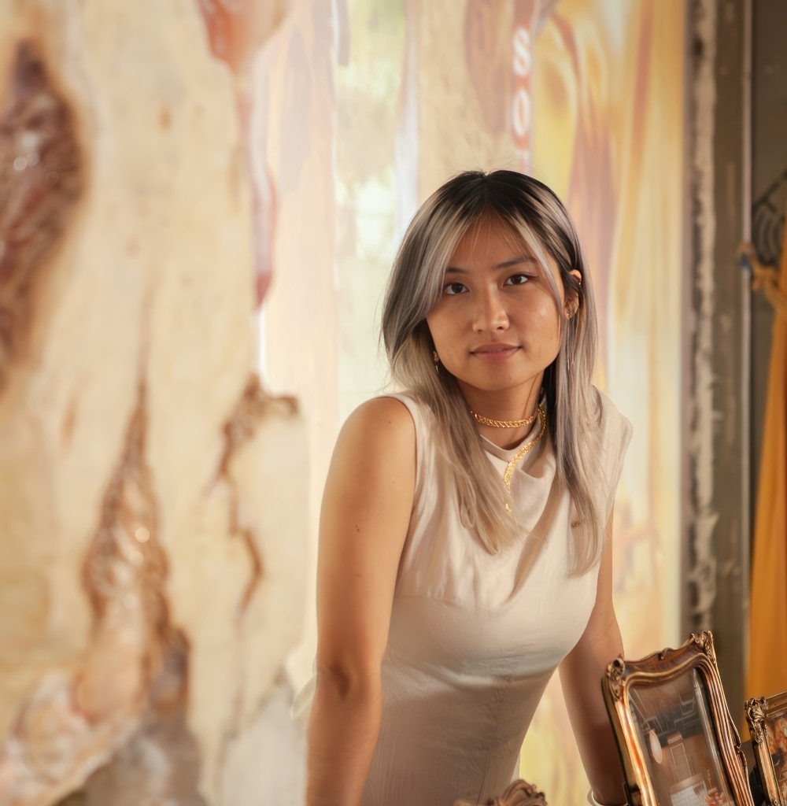
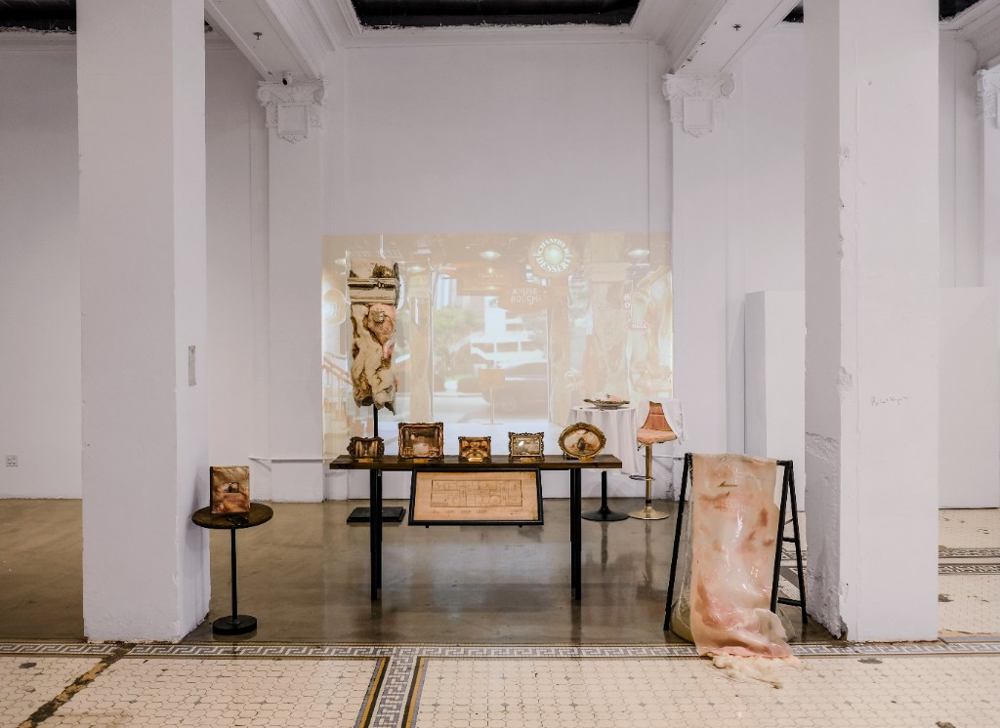
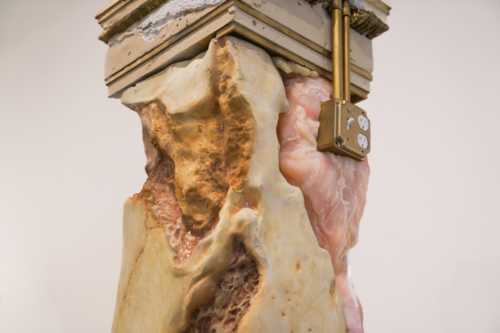
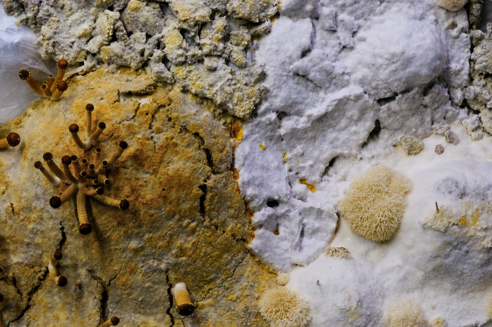
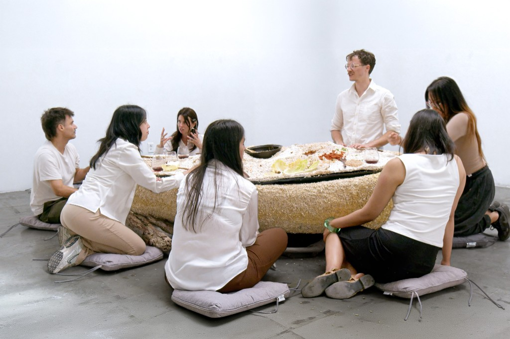
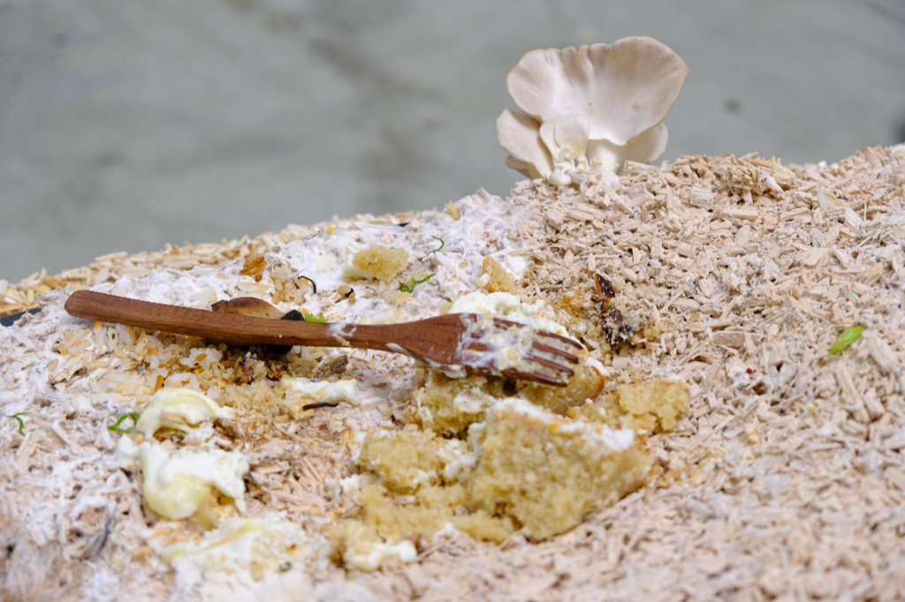
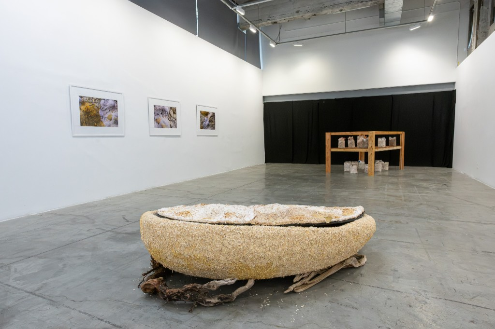

Yi Cheung is a Los Angeles-based artist, designer, and educator originally from Hong Kong. Drawing on her architectural background, her art practice OTW prototypes new relationships between human and nature, often expressed through new media installations composed of biomaterials. Her design and fabrication work appeared in gallery exhibitions, commercial music videos, indie films, and magazine editorials. She holds a dual master's degree from SCI-Arc in Architecture and Fiction & Entertainment, where she was awarded the Graduate Thesis Gehry Prize for her 2025 thesis, advised by David Ruy.
Introductory Statement
Yi, we would love to thank you first and foremost for your eagerness to join us in this short interview for our readers and to highlight all the work you have been up to as of late. Of course, we also thank you for a certain dinner invitation.
“Earthly-Intimacy” is Yi's ongoing series of altered domestic objects. The latest chapter — Common Ground, a mycelium-made dining table — anchors a multi-species feast where the line between eating and decomposing subtly dissolves: what falls from the plate becomes, eventually, a meal for the fungus growing beneath it.

Background: Artistic Practice
You have an architectural degree, and draw from it frequently for your research and artist practice, OTW. Would you consider yourself an architect?
I am way too entangled with architecture to not call myself one… But I think what I actually inherited from it isn't buildings, but the way of conveying narratives through tangible experiences. My architectural education always insisted that architecture isn't equivalent to buildings. It is more so “architectural thinking”, a way of all-aspect critical thinking that happens to be transferable to a lot of subjects. What I really do is construct narratives spatially through considering multiple scales: a body, a home, a community, a city, a planet, sometimes all at once. The architectural discipline designs the conditions that ties people to whatever is around them, rather than just the built object itself. That logic is the same one that runs my artist practice now: I'm just no longer working on the scale of a floor plan, but furniture that is made out of mycelium and beeswax. They shape habits and experiences just like a building does. In fact as a professor now teaching in a college architecture department, I see my value in providing a different vantage point for students headed toward traditional architectural practice. On the other hand, as something closer to a real-life example for the ones drawn to other professions adjacent to it.

How did your artist practice begin? How did you become what you are today?
It starts with my mom, honestly. Beyond cultivating my early interest in craft-making, she always inspires me that a good story is what makes a good project, that narrative instinct got planted in me long before architecture did.
I went to the Bartlett at age eighteen, a dream at the time, a school built on speculative spatial design with a focus on visual narrative. I designed a theme park on the River Thames in the future where it would hypothetically freeze at Christmas due to climate change, like it had in the 19th century. I realize I am more interested in what architecture could be, than what it is defined now. This draws me to my turning point in SCI-Arc. It had an experimental atmosphere I couldn't find back home: make things intuitively, see where they land. That liberty that I had yearned for has allowed me to fully express my inner self for the first time.
The real wake-up call was Nusi Quero, an experimental wearable designer I'd looked up to since I was sixteen back in Hong Kong. I reached out, worked for him one summer before he passed away, and watching him work every day gave me the courage to actually throw things at a wall and get my hands dirty with whatever material was in front of me. I discovered my passion for materiality. I became really productive at the time, making my first fashion collection and a subsequent series of sculptures, “Synthetic Skins”. They were made out of cotton I pulled from an IKEA pillow, leftover packaging material, saran wraps and plastic bags. My specific aesthetic interest towards textures that seem to be still wet, gooey, and alive that is frozen in the moment has developed since then. I started working with materials that are actually freshly alive. I made a shoe out of raw shrimps. In another series “Hybrid Veg”, I cut open and cook different vegetables and create sculptures combining synthetic materials that further personify those vegetables.
From there, SCI-Arc's strong liberal art education deepened my interest in humanities and discourse. Reading, writing, and building arguments were one of my greatest joys. David Ruy, my thesis advisor, was the person who actually threaded that theoretical interest into my artistic work. He introduced me to works from Jon Foncuberta and David Wilson who practice “speculative scholarship”. I was inspired to build my fictional artwork on theoretical frameworks related to natural history. For example “Parrot-Lobster-Crab” was a pseudo-taxidermy I created, and subsequently an entire world of hybrid creatures together with a new taxonomy. Using art as a media to ask questions about the existing ecological constructs. Lastly, the final push was from my advisor for my second thesis, Liam Young. Seeing him succeed as both artist and educator, while hearing his read on the industry, was what convinced me to commit to being a full-time artist.


Home, conversations, connections, and communities


Regarding your collaboration with Substrate Lab on the dining experience Earthly Intimacy, and considering the multimedia scope of the project, what role do you think multi sensory experience plays in your work as an artist/architect? What was the collaborative process like?
Tangibility has, for a while now, became an unavoidable element in my work. Natural materials carry their own senses, that's what sparks curiosity. I trust that nature's wonder can pull people in on its own, which is where the name Earthly Intimacy comes from: the belief that we all carry some innate connection to it. I see myself as a mediator that helps channel nature's wonder in front of people’s eyes, almost magnified. Meaning that curation becomes important.
In my previous architectural thesis, I looked into theatrical effects that could be achieved by spatial organization. For Earthly Intimacy, guests were first brought into a dark, narrow waiting room, where a short film played. Close up on my hands and body moving along with the living materials, edited with “microscopic” footage of the mushroom landscapes, overlaid with my own voice, low and slow.

I wanted the audience to slow down and immerse, take the time to observe and immerse in their surroundings — smell and touch the mushrooms.
Then I'd appear from behind a black curtain and invite them into the dining room, which was also the exhibition hall, brightly lit, lined with the microscopic, landscape-like photographs I'd taken of the mycelium. They then encounter my home-made greenhouse from the film. It was meant to bring audiences back to my home lab — my living room. Mist from a humidifier fills the PVC coverings, monitors tracking temperature, growth bags with all kinds of mushrooms blooming at every stage.

And finally in the corner, the table, waiting to be sat around. I designed it low on purpose. That came out of research into how table height across different cultures changes how communal a meal feels. Guests had to grab their own cushion, which meant choosing their own seat: a spot on a table that was undulated in height, visibility, and mushroom density. I wanted it to feel like a landscape. I had wanted it to be an undulating landscape because I was repeatedly having this imagination of how wine glass would tip over and guests have to find a way to shove them in somehow…
This your first time working with chefs to realize an experience? And what was your favourite dish at your Earthly Intimacy?
Ranen and Angel from Substrate Lab gave me a dream-like collaborative experience. There truly lies a real power in minds coming together like that. Our first meeting was especially memorable. Ranen understood the communal, interactive vision immediately, and brought insight from the catering side I'd never have known. Apparently there's real specificity to how close a dinner table should seat people, utensils, table height and such. Drawing on both our Cantonese backgrounds, he suggested pulling elements from Dai Pai Ddong culture — the street-side meals common in Hong Kong in the '80s — like metal cans holding chopsticks so guests could serve themselves. His best idea was the pot rice: guests would "forage" mushrooms into a basket, add them to the pot, and let it steam in its own heat from the hot sandpot, until it was finally thoroughly steamed and they got to eat what they'd just gathered.
It was strange and wonderful merging two distinct languages, architectural and culinary, describing the same idea. That felt like real interdisciplinary collaboration: different roles, same vision, each perspective making the other's input sharper.
Curating the menu was one of my favorite parts of the process, maybe because storytelling matters just as much in both our professional fields. After rounds of discussion in my studio and theirs, the arc took shape: individual tiny bites on a hard crust to start, then juicy mushroom carpaccio lined with only a single shiso leaf, building to eating directly off the table by the main course. Lots of sauces were layered along the meal to contrast the mycelium. Both of us insisted that it had to be as messy as possible — disrupting the sterile myth of the dinner table. My favorite dish is easily Angel's dessert, the shiitake financier. A rich almond cake, fresh cream, caramel drizzle, dried shiitake, microgreens — a drooling blend of sweet and savory in a way that shouldn't work but does. She went through several trials incorporating mushrooms. The final texture of the chewy half-dried shiitake was actually an accident (from the caramel holding too much oil and moisture) It became my favorite part of the meal anyway; I kept thinking about it between tasting sessions, and to this day still do. As a pastry chef, presentation matters enormously to her, so serving a whole cake wasn't an obvious win at first. We landed on a middle ground, plating it tableside, straight onto the mycelium, and dressing each portion individually in front of the guest. They were both very flexible artists and the work couldn’t be done without mutual trust.
Now, we know you have gone elsewhere for your new role. Which of course, congratulations! Are you going to miss LA? Or the other places you’ve called home?
I miss the familiar smells of streets in Downtown LA streets — not the usual "glam" that people think of. I go to the Fashion District a lot for all of my tools and materials, there are so many stalls that I source from. They hold fragments of my creative process and contributed to making many of my work come to life. Shopkeepers half-recognize my face by now, they are strangers who've come to feel familiar. Every street down there is distinct, and also changes with the time of day, like a film looping every day but never playing the same scene twice — and I'm also living in it. They made me feel like there are little pockets of this big city that belong to me, and only me. This loose, fluid connection to a place and its people is what I love deeply and miss most about LA.
As to a new home… My concept of a home has never really been concrete and I’m still figuring out — which was where the Earthly Intimacy project began — I was looking into domestic spaces, initially. I don't consider myself as someone who easily fits into an existing community. More often, I end up building my own. The opening dinner was a great example. The eight guests I invited were handpicked — mostly curators and artists I'd met once or twice in LA, introduced through friends and mentors. But I'm really sensitive to frequency, I'd say I could tell they'd enjoy the work and have fun participating in the performance, and some brought a plus-one who turned out to be just as into it.
When I finally let everyone into the dark room to see the mushroom terrarium I'd grown for two months, they got close with a smile on their face, and someone asked, almost immediately, if they could touch it. That’s the kind of quirkiness I want to build around myself: curious, unafraid of what's supposed to be off-limits. Later, I invited everyone to eat straight off a table grown over in mushroom and nobody hesitated, no questions were asked, I only felt the full-submergence in the atmosphere — which as a host I was really glad about. We ended up deep in conversation about vegetarianism, the trolley problem, someone half-delivering a manifesto on utilitarianism after a glass of wine. I felt like I built a community temporarily that I had always wanted — the kind you’d expect to find in the Greek Agora. I have always consciously positioned my works as an invitation more than a passive display with a presumed argument. This has allowed conversations, connections and communities to be built — the biggest notion for me as an artist.